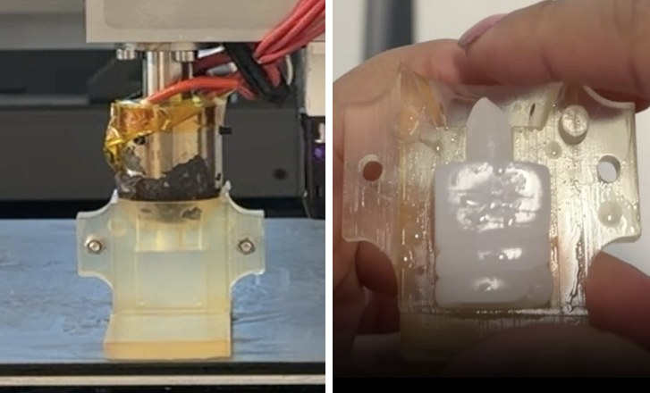
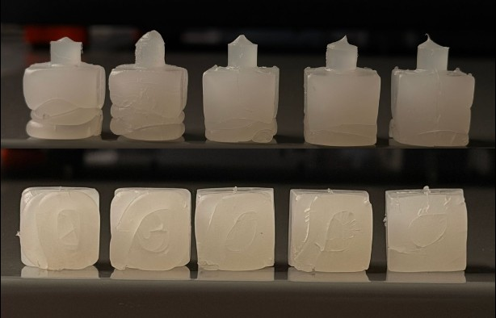
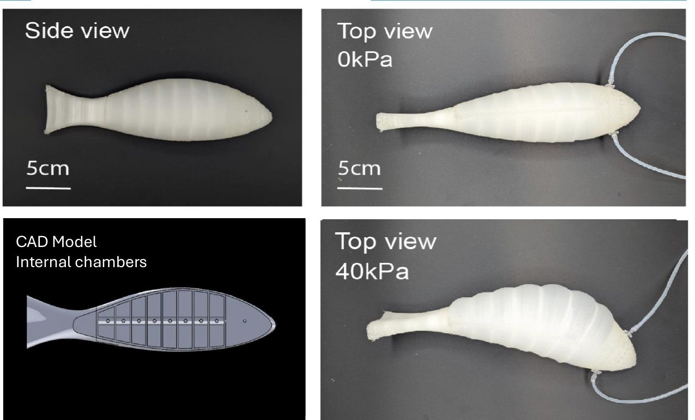
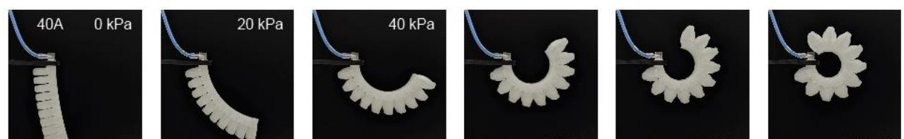
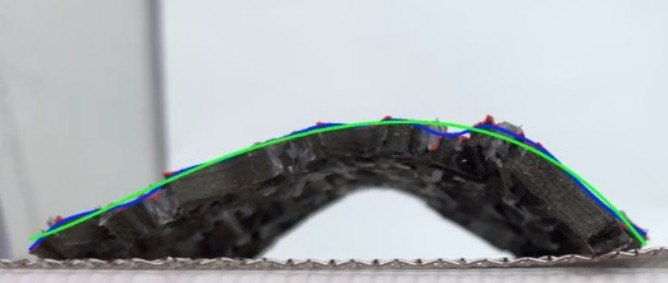
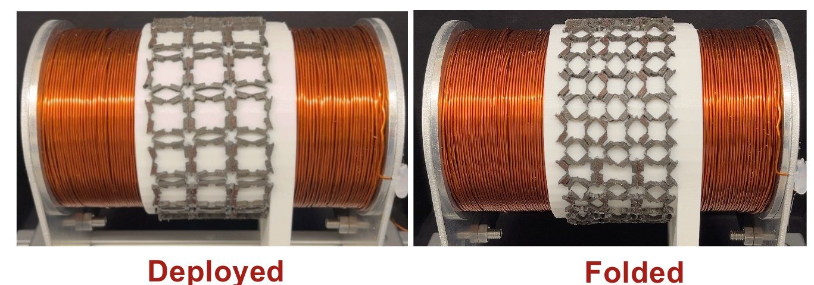
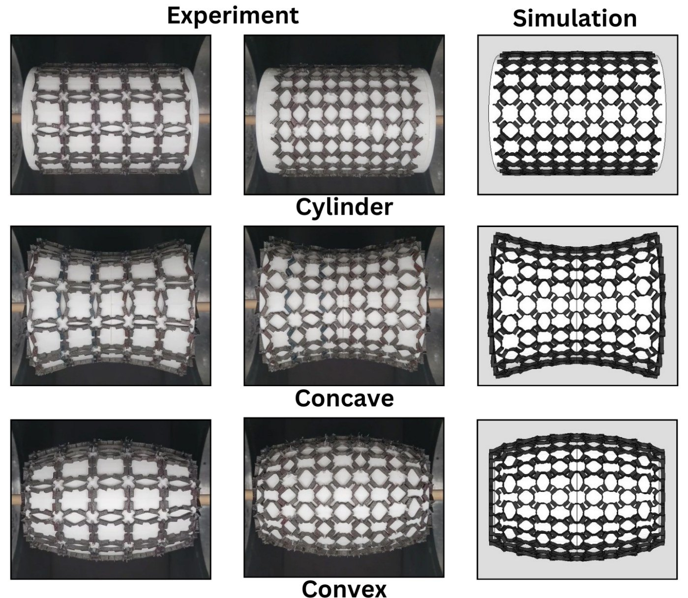

Fabrication methods for soft robots and soft active materials, from pellet-based 3D printing and injection molding to magnetically actuated metamaterials.
Publications
Pellet Printing for Soft Robotic DevicesY. Wu, J.-H. Chen, A. Olivares, K. Kostak, S. Pedicone, S. Kendre, M. Nemitz.Advanced Science, 13(30), e24237 (2026).
This thesis evaluates injection molding with a pellet extrusion head as a low-cost method for fabricating simple soft robotic components from ultra-soft thermoplastic elastomers that are difficult to 3D print directly. The pellet extruder fills 3D-printed molds directly, producing parts in minutes, and the system currently molds benchmark cubes and tensile dog-bone specimens. Molded parts are benchmarked against those from a commercial injection molding machine.
Current trials use SEBS pellets (Shore 34A) in SLA-printed cube molds. The best parameters so far, an extrusion temperature of 250 °C and an extrusion speed of 42 mm/s, produce smooth upper regions, but jetting leaves coiled material at the bottom of the part where the extruded strand does not fully merge. To iterate faster on mold geometry, I designed reusable SLA mold caps that fit onto interchangeable PLA molds. Next steps include inlet geometries that bring the melt into earlier contact with the mold wall, TPU grades (60A and 70A) that may merge more readily, and lowering the mold during filling to build pressure at the bottom of the part.
Longer term, an interchangeable PLA extrusion head would allow the same system to print its own molds. The project supports the group’s broader goal of low-cost landmine-detecting robots that can be produced with widely available 3D printers.

Pellet extrusion head filling a mold (left) and a molded cube in its mold (right).

Molded SEBS 34A cubes, front view (top row) and underside (bottom row). The coils on the underside come from jetting during filling.
Most soft robots are made either by casting soft silicones or by filament 3D printing, which is limited to much stiffer materials. This project explored fused granulate fabrication (FGF), or pellet-based 3D printing, as a low-cost alternative that is as simple as filament printing but works with materials nearly as soft as cast silicone. Using the group’s pellet printer, I evaluated printer performance through mechanical testing and demonstrations.
For the group’s paper, I was responsible for the comparison between 3D-printed and cast PneuNet actuators, including fabricating the cast benchmark actuators and setting up tensile and inflation-cycle testing. The printed PneuNets kept their structural integrity over 100,000 inflation cycles. I also designed and modeled a soft robotic fish in CAD, including its internal pneumatic chambers, which was printed as a single part with no post-assembly.

Soft robotic fish I designed in CAD, pellet-printed and shown at 0 and 40 kPa.

Printed PneuNet actuator bending as pressure increases.
Soft Intelligent Materials Lab (Zhao Lab), Stanford University. With Jay Sim, Sarah Hwang, and Prof. Renee Zhao.
Studied freestanding magneto-mechanical metamaterials with out-of-plane magnetization. I fabricated silicone and NdFeB unit cells in 3D-printed molds, magnetized them at controlled angles using custom fixtures in a 1.5 T impulse field, and assembled them into arrays that rise into 3D shapes under a magnetic field. Measured shapes, extracted with a MATLAB image-processing pipeline, were compared against Abaqus simulations, which captured the dominant folding behavior.
The project was conducted in collaboration with Prof. Wei Chen’s group at Northwestern University, toward design-optimized metamaterials that morph from flat sheets into complex 3D geometries.

Actuated array with spline and polynomial edge fits.
Designed unit cells that allow magneto-metamaterial arrays to conform to cylindrical, concave, and convex substrates, then fabricated, magnetized, and assembled the arrays and actuated them between paired electromagnetic coils. I also tested a hollow array wrapped around a discrete iron-core coil, which reached peak actuation at 22.5 A. Experimental deformation closely matched Abaqus simulations, and the results showed how magnetic particle concentration and applied current shape the actuation.

Array on the iron-core coil, deployed and folded.

Experiment and simulation on three substrate shapes.